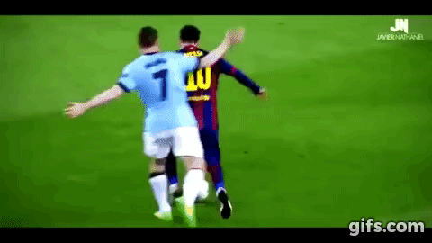
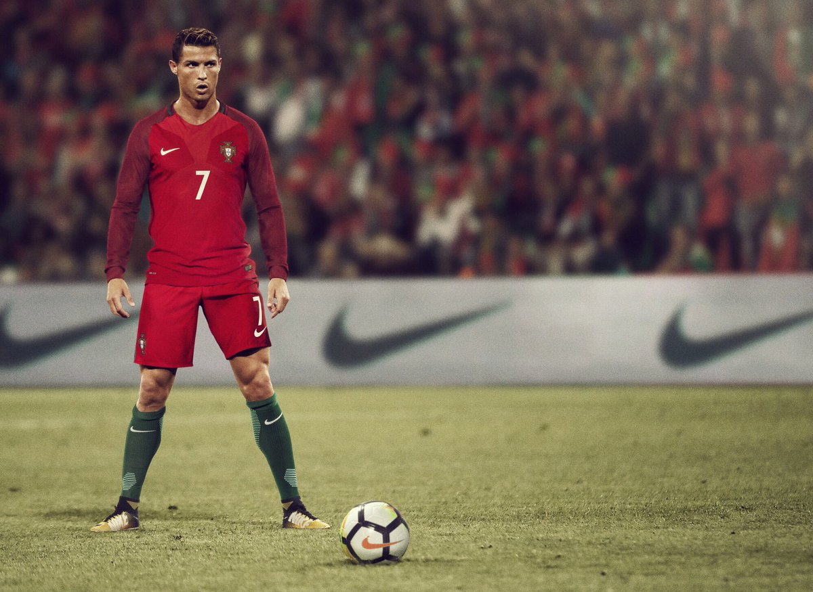
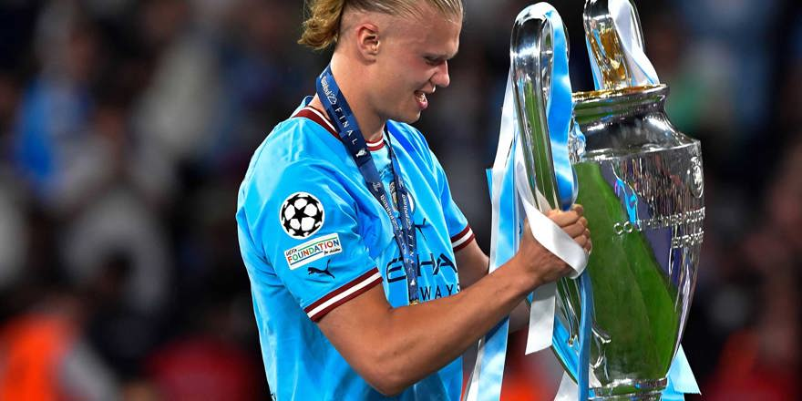

What Makes a Soccer Player the Best?
What sets legendary soccer players apart from the rest? Whether it’s scoring jaw-dropping goals, winning the most prestigious trophies, or inspiring millions of fans, the best soccer players share qualities that push them to the top of the game. Let's dive into the essential traits that define the world's top soccer talents.
1. Technical Skill
At the core of every great player is exceptional technical skill. The best players can dribble, pass, and shoot with precision and creativity, often making split-second decisions under pressure. Technical mastery is essential because it allows players to control the game, move through defenders, and create scoring opportunities.
Dribbling:
The best players have tight ball control and can dribble through multiple opponents, as seen with Lionel Messi’s famous runs.Passing Accuracy:
Players like Xavi and Iniesta have shown how crucial pinpoint passing is to control the tempo of a game.Finishing:
Scoring is the ultimate goal in soccer, and finishing ability can make or break a top striker’s reputation.
2. Physical Fitness and Athleticism

Elite players have the stamina to cover long distances, the strength to hold off opponents, and the speed to break free and score. Physical prowess enables players to maintain high performance throughout a game, push past defenses, and stay resilient.
Stamina:
Soccer is a 90-minute game, often longer. The best players train for endurance to stay active throughout.Strength:
Players like Cristiano Ronaldo show the power needed to win physical battles and execute powerful shots.Speed:
Fast players like Kylian Mbappé create unique opportunities by outrunning defenders, allowing for explosive attacks.
3. Tactical Intelligence
A top soccer player has a sharp understanding of the game, often seeing several moves ahead. Tactical intelligence allows players to anticipate opponents' actions, make strategic plays, and adapt to the game as it unfolds.
Game Awareness:
Players with strong tactical minds understand their position in relation to teammates, opponents, and the goal at all times.Adaptability:
Great players adjust their play style depending on their team’s strategy, the opponent’s weaknesses, and the score.Leadership on the Field:
Top players, such as defenders like Sergio Ramos, communicate with teammates, directing the game to protect and advance the play.
4. Mental Toughness and Focus
Soccer requires intense focus and resilience. Elite players remain calm under pressure, stay mentally tough after setbacks, and maintain peak concentration to avoid costly mistakes.
Confidence:
Players need confidence to take risks, like attempting a long-range shot or a daring dribble.Resilience:
When faced with losses or tough games, top players like Lionel Messi and Neymar keep pushing forward.Focus:
Soccer is fast-paced, and one moment of distraction can cost a game. The best players train to keep their focus sharp, regardless of the circumstances.
5. Consistency and Dedication
The best players perform well game after game, season after season. Consistency requires intense dedication, from strict diets and intense training to studying their own and others' performances. Legendary players are disciplined, working tirelessly to maintain and improve their skills.
Training Discipline:
Top players spend countless hours training their bodies, skills, and minds, following strict routines.Perseverance:
The path to greatness includes setbacks, injuries, and challenges. The best push through these with unrelenting determination.Longevity:
Cristiano Ronaldo and Lionel Messi are prime examples of players who, despite aging, continue to perform at the highest level due to their commitment.
Conclusion
The journey to becoming the best in soccer is challenging, requiring an unparalleled blend of skill, athleticism, intelligence, mental strength, and dedication. Legends are defined by their ability to combine all these traits to perform at the top, inspiring teammates, fans, and future players alike. Whether it’s a moment of individual brilliance or a lifetime of achievements, these qualities make a soccer player truly great.